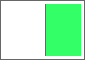
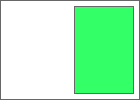

Alan Stearns,
Adobe Systems, Inc.,
stearns@adobe.com
Not Ready For Implementation
This spec is not yet ready for implementation.
It exists in this repository to record the ideas and promote discussion.
Before attempting to implement this spec,
please contact the CSSWG at www-style@w3.org.
Abstract
The Pagination Templates module describes templates that generate boxes in CSS to display content in a paginated view. These templates define a page containing one or more boxes with content assignments. As content overflows additional pages are generated using template selection rules until all of the content is displayed.
Status of this document
This document is an unofficial Editor's Draft. It is provided for discussion only and may change at any moment. It has not yet been adopted by the Working Group, and should not be considered to be part of CSS.
The archived public mailing list www-style@w3.org is preferred for discussion of this specification. When sending e-mail, please put the text "css3-page-template" in the subject, preferably like this: "[css3-page-template] …summary of comment…"
The following features are at risk: none
Introduction
This section is not normative.
This module describes how to define pagination templates in CSS. In CSS 2.1 content displayed on-screen is assumed to be a single continuous canvas. Pagination templates provide a mechanism for a 'paginated' experience that applies to on-screen presentation as well as printed media. Pagination templates define boxes in CSS where content is displayed as the user moves from page to page on screen or prints the document. When content is laid out using pagination templates, pages are generated as needed to accommodate all the content.
The draft as it stands requires pagination to present the repeated template layouts. Other methods of repeating template layouts to accommodate content might be specified, but the draft would need to be reviewed to remove all reliances on paged displays.
The terms 'template' and 'page' are overloaded in CSS, but they are the words that most clearly describe the concept. Some alternates for the main @ rule: template, page-template, view-template, page-master, master-template, master. Other suggestions are welcome, but only if they are more helpful than onelook.com (which suggested "Captain Submarine").
This specification may be the best place to define "continued here" or "continued on page x" generated content, since this spec defines ways to skip pages (that basic pagination may not).
Pagination templates consist of anonymous boxes called slots created by CSS to contain content. Layouts that use pagination templates mainly determine the size of these slots from the template definition instead of the size of their content. When content does not fit into a template slot, additional pages are created with more slots to contain the overflow content.
Multiple pagination templates can be defined for a given document. A paginated element can use a single template or select from a set of templates each time a new page needs to be generated. Which template is used for a given page can be defined by a selector or by choosing a template based on available content. Elements can further constrain the applicable template set by listing a subset of templates that apply.
Module Interactions
This module uses named flows and region chains defined in [[CSS3-REGIONS]].
This module uses the overflow-style property from [[CSS3GCPM]].
Some examples use positioning from [[CSS3GRID]].
Pagination Templates and Slots
An @template rule defines and names a pagination template. Pagination templates contain one or more slots to display content. These slots create boxes for each page generated from a pagination template. An element can use pagination templates if its 'overflow-style' property is set to any of the paged-* values defined in css3-gcpm. If a document defines no pagination templates, then there is an implicit pagination template with a single slot containing the paginated element's contents.
Instead of a dependency on GCPM, this spec could define what happens with a paginated view, without specifying how the paginated view comes into existence. What happens when you apply 'overflow-style:paged-x' to an iframe or region?
The box created from an @template rule defaults to the size of the paginated element's box.
A slot is an anonymous box in a pagination template where content can be placed. In an @template rule @slot rules create slots. The order of @slot rules determines the order of the boxes in the pagination template. @slot rules can define a name for the slot.
Slots default to displaying the content of the paginated element. Slots can instead contain generated content assigned with the content property. Slots can also be assigned content from named flows.
An @template rule that creates header and footer slots around the paginated element's content
If any slot in a particular page has overflow content, a new page is created with a new set of slots to receive the overflow content. Slots with the same named flow assignment form a region chain (within a pagination template and/or across pages created from pagination templates). When a new page is created a slot that has been assigned element content or content from a named flow may not have any content left to render. In this case the slot for the exhausted content source is not instantiated.
If there is more than one slot with no 'content' or 'flow-from' assignment, does the element's content use all of these slots like a region chain, or is only the last unassigned slot used for content?
The simplest example takes all of the content in the document and flows it into a single pagination template with a single slot. This template will display a viewport's worth of content at a time, and will create a new slot on a new page each time content overflows.
The three examples below are equivalent, but merely illustrate how content from the element can be assigned to pagination template slots. Actual use of templates would either define more slots or assign content differently than the default.
@slot rules are a first pass at defining CSS-created boxes. Other means of creating and addressing pseudo-element slots have been discussed on www-style. If @slot rules or pseudo-elements are used to create template boxes, then OM for pseudo-elements must be defined (scripting and events working with paginated content is a valid use case).
One argument against using pseudo-elements to create templates is that this is defining structure in CSS. If nested slots are required, then we're on a slippery slope towards re-inventing HTML inside of CSS.
An alternative could use Shadow DOM to define the boxes. This gives us structure and OM, but would need a declarative method of mapping content to elements. One suggestion was to use @slot rules in a flat list for the simple case, but start to rely on Shadow DOM for more complicated cases. If this route is taken, then @slot rules probably aren't required, as Shadow DOM can also handle the flat list case.
Pagination templates can use declarations to determine the layout method for slots. @slot rules can use sizing and positioning declarations.
A pagination template could contain two side-by-side slots that paginate two separate articles. Side-by-side translations are often laid out this way. This example fills the left side of the paged view with content from an English article and the right side with content from a French article. New pages and slots are created until the content from both articles is exhausted. If one article is longer than the other then in this simple example template the longer article will continue taking up just its half of the page.
The example above could position the slots using grid layout rather than floats. In this simple example the longer article will take up the entire page once the shorter article is exhausted.
Multiple templates can be defined for a single document. An element that uses pagination templates either selects a template from the entire document set or a subset defined by the 'template-set' property. Each page view created uses a single template. This template can be chosen from the applicable set using a selector, by matching content to display using the 'required-flow' or 'available-content' declarations, or just taking the last template found.
The following section describes selecting templates with several mechanisms (selectors and declarations, and presumably @template rules could be scoped by media queries). An alternative could be to define all selection mechanisms like a media query, where all of the selection mechanisms are outside the declaration block. Attempting to define template rejection rather than selection might also prove fruitful.
In this example the divs are paginated using the last template found from the set of templates that apply to the div. The first div uses template three, the second div uses template two, and the third div uses template one.
div { overflow-style: paged-x; }
.either-one-or-two { template-set: one two; }
.only-one { template-set: one; }
@template one { ... }
@template two { ... }
@template three { ... }
<div class='any-template'> ... </div>
<div class='either-one-or-two'> ... </div>
<div class='only-one'> ... </div>
Selecting Templates by Page Order
Selectors such as :first can be used on a pagination template to define a separate template for pages that match the selector.
Should :left and :right be allowed with a way of displaying more than one page at a time in a viewport? Should :nth(x) selectors be allowed?
Describe how @template rules cascade with names and selectors (or how they do not cascade, if that's preferable).
Any of the side-by-side two-article examples from the previous section could have an @template :first {} rule that defined a fancy layout for the first page.
@template side-by-side:first {
@slot left {
//fancy styling
flow-from: article1;
}
@slot right {
//fancy styling
flow-from: article2;
}
}
define "fancy."
Depending on how template selection is defined, there will likely be scenarios where degenerate template sets can either fail to display all of the content or result in an infinite loop of page generation. This first draft falls into the latter category (make a :first template with a slot that overflows, but fail to include an assignment for that slot's content in all other templates), so this will need to be addressed with more selection rules.
Selecting Templates from Required Flows
The 'required-flow' property can be used in a pagination template to list named flows that must still have content in order for the template to be used. If more than one template has a 'required-flow' value that matches the remaining flow content, the last template that matches will be used.
"Continued on" layout.
These pagination templates will display an initial page with the beginning of both the 'lead-story' flow and a 'related-article' flow. If the lead story has more content than will fit on that first page, the next page(s) will show only content from that lead story. When the content from the lead story is exhausted, then pages will follow with content from the related article.
Pagination templates can be selected based on the order of content in the DOM tree. Content may be split out into one or more named flows, but the original order can be discovered in the DOM and used for template selection.
Pagination templates have a 'primary' content flow. The primary flow for a pagination template is usually the content of the paginated element. If no slot in the template displays the element contents, then the primary flow of the pagination template is the first named flow in its required-flow declaration.
When selecting the pagination template for the next page, the primary flow in the original markup can be scanned to determine whether any out-of-flow content in other named flows was originally related to the next page of primary flow. If this is the case, then those named flows have 'available' content for the purpose of selecting an appropriate template that can display this content.
Pagination templates can have an 'available-content' declaration listing the named flows that must have available content for the template to be selected. Templates with more 'available-content' flow matches take precedence over fewer or no 'available-content' flow matches. If a template with an 'available-content' declaration is chosen, only the available content in those flows is displayed in the slots associated with those flows.
Clarification example (not meant to be a valid use case)
Consider an article element that contains images scattered throughout. Assign the images to a flow named 'images' and the rest of the article to a flow named 'text'. Then define two pagination templates - one that has slots only for the 'text' flow, and another that has slots for both the 'text' and 'images' flows. Both templates require the 'text' flow, but the second template also requires the 'images' flow and has an 'available-content' declaration listing the 'images' flow. Each time a page is laid out, the original article element is scanned to see whether an image element is in the next page's worth of content (determined by some DOM-tree-scanning heuristic – not layout). If so, then that content from the 'images' flow is available for the purpose of selecting a template.
Motivational example (meant as a use case)
Assume you have an article that contains both pull quotes and images. If only images or pull quotes would occur on a page, position those elements in the center right of the template. But if both images and pull quotes would appear, position the images in the top left and the pull quotes in the bottom right.
code this example
CSS Object Model
There should be extensive OM defined to access pages and slots. What page is being displayed should be available. Pages and slots should accept event handlers. Anchors should navigate to the appropriate page (as should search). What content fits in each slot and page should be determinable. Lots to fill out here.
Motivational example
Given the side-by-side paginated template for French and English, allow the user to click and drag the French text from the right to the left to switch sides for both flows.
Conformance
Acknowledgments
The editor is grateful to the CSS working group for their feedback and help with the genesis of this specification.
In addition, the editor would like to thank the following individuals for their contributions, either during the conception of CSS Pagination Templates or during its development and specification review process:
 …
…
 
…

…